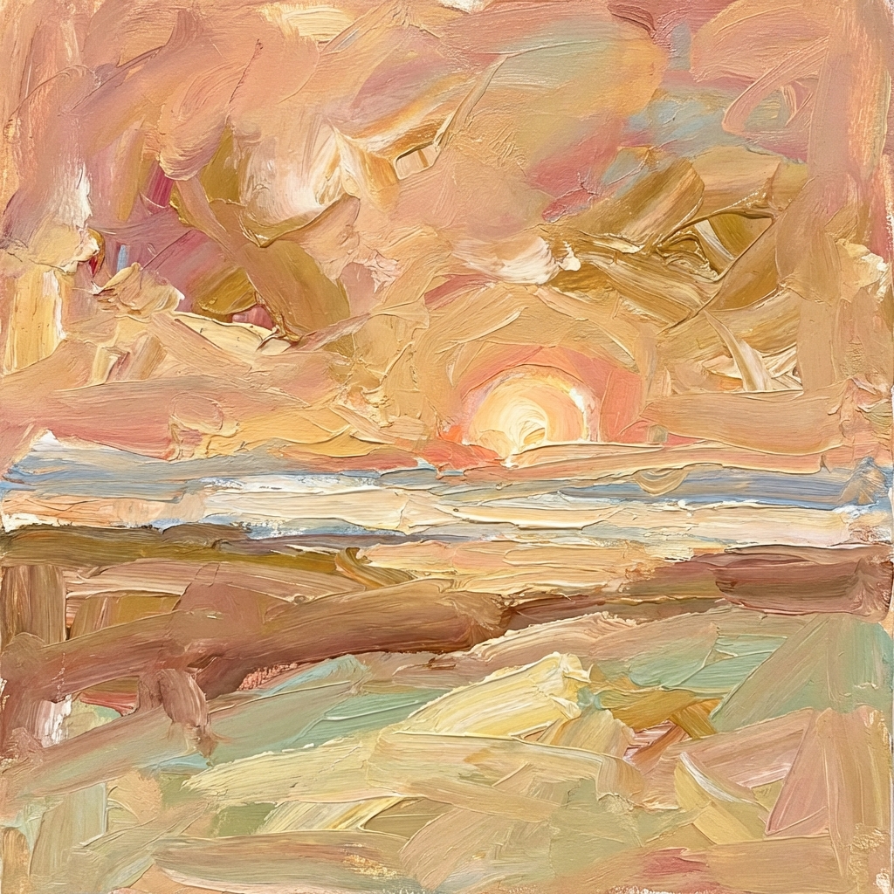

Un nuovo giorno

Tu che immancabilmente sorgi
tra nebbie assiepate
su alberi ancora
addormentati,
tra nebbie assiepate
su alberi ancora
addormentati,
corri a liberare le stelle
rimaste impigliate
tra i rami della notte
rimaste impigliate
tra i rami della notte
mentre le nuvole del mattino
fan la fila
per specchiarsi in acqua
e svettanti chiome
ondeggiano mollemente verso il cielo.
fan la fila
per specchiarsi in acqua
e svettanti chiome
ondeggiano mollemente verso il cielo.
Della tua luce
si nutrono gli occhi
e tutto ciò che ti circonda.
si nutrono gli occhi
e tutto ciò che ti circonda.
Paola Spremulli